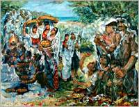
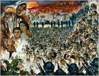
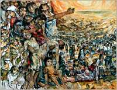
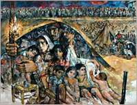
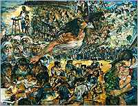
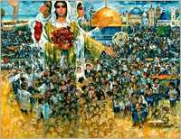
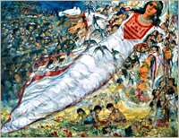

 Oil painting, 1997, 165X200 cm. Life in Palestine during the British Mandate was marked by trouble and upheaval. There were continuous revolts, uprisings and national outcries against the British-Zionist plot to take over the country. Yet, Palestine in my memory is a glorious spring full of color, abundance, grace and happiness. |
 Oil painting, 1997, 165X200 cm. On the morning of 13 July, 1948, we were forced out of our ancestral homes in Lydda at gunpoint. Zionist gangs rounded us up and herded us into the city’s largest squares. Then, surrounded by a tight cordon of these heavily armed gangs, we were driven relentlessly towards the east. |
 Oil painting, 1998, 165X200 cm. Encircled by violent, abusive gangs we were forced to march east through rough, arid, mountainous terrain until we reached Arab controlled territory. The heat and thirst were an agony, which killed many old people and children. The confusion and panic separated many children from their families. |
 Oil painting, 1998, 165X200 cm. Out of Lydda to Ramallah, Bethlehem, Hebron, then to Khan-Younis near Gaza -our destination was a refugee camp surrounded by barbed wire. International charity trickled in. The proud Palestinians of yesterday – today’s refugees – learnt to queue for meager food rations to ease their widespread hunger pangs. |
 Oil painting, 1998, 165X200 cm. The refugee camp became a nightmare prison, which had to be escaped. The train became the symbol and dream of escape and link to life and the world. But until such a time as the dream could be realized, the refugees were forced to concentrate on ensuring bread for their families. |
 Oil painting, 1999, 165X200 cm. We had to affirm our existence by hard work, study, and excellence. Our young men and women sought work in other countries, always maintaining strong ties with their families in occupied Palestine. At the center, stood the Palestinian mother; symbol of tenacious endurance and patience, confident of her self and of the future. |
 Oil painting, 1999, 165X200 cm. The Israeli occupation was oppressive and ruthless. But we struggled to survive, to assert our presence, to preserve our traditions, and sustain our dreams. Life went on. Happy and sad occasions continued to be observed and celebrated in traditional Palestinian custom. And children multiplied … |
 Oil painting, 1999, 165X200 cm. In the early sixties, the Palestinians refocused their efforts on reclaiming their homeland. The resistance movement grew stronger, and resistance groups sprang into existence. The activities of the PLO (established in 1964) increased dramatically after the 1967 war, reviving the peoples’ pride and hope. |
|
|
 |